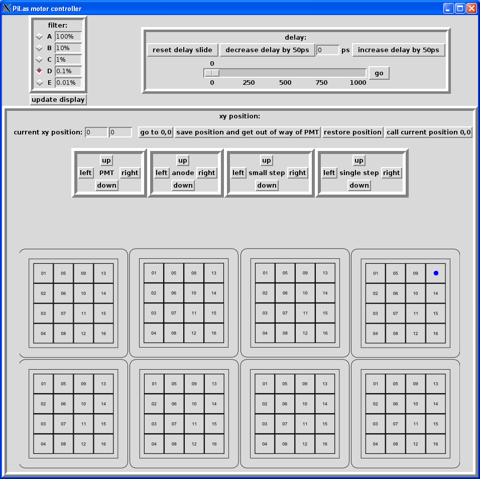

The GUI uses Perl/Tk, which is a graphical layer on top of Perl. The laptop (pilas-laptop) runs the motor control script remotely (through X11 forwarding) on the rackmount cPCI crate (idlkosmic).
apt-get update
sudo apt-get install perl-tk libdevice-serialport-perl vim-gtk openssh-server
KERNEL=="ttyUSB[0-9]", MODE="0666", GROUP="root"to the file
/etc/udev/rules.d/idlab.rules
udevadm control --reload-rules
useradd --create-home your_desired_username
cp -ar /source/of/motor_controller_script /home/your_desired_username/motor
chown your_desired_username:your_desired_username /home/your_desired_username/motor -R
passwdto change your password
ssh-keygento create a public/private key pair
scp .ssh/id_rsa.pub pilas-laptop:.ssh/authorized_keys(because ssh-copy-id doesn't work from the debian install on idlkosmic)
su) to become super-user:
deb cdrom:[Debian GNU/Linux 5.0.3 _Lenny_ - Official i386 CD Binary-1 20090905-08:23]/ lenny mainin the file
/etc/apt/sources.listwith your favorite text editor
apt-get update
apt-get install openssh-server
useradd --create-home your_desired_username
passwdto change your password
ssh-keygento create a public/private key pair
ssh-copy-id pilas-laptop